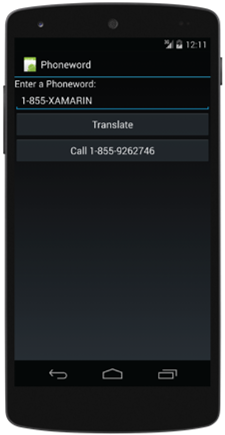

Exercise 3: Implement app behavior in C# code-behind
Duration
15 minutes
Lab goals
The goal of this lab is to implement the behavior of the Phoneword application. The UI was created earlier
in this session and currently consists of a TextView, an EditText and two
Buttons as shown on the left:

|
 |
Here is a high-level description of the required tasks for this lab:
- Subscribe to the
Clickevent on the TranslateButton. - Retrieve the text from the PhoneNumberText field.
- Translate the alphanumeric text into a traditional phone number, where ABC ➡ 2, DEF ➡ 3, etc. Code to perform this translation has been provided.
- Update the
Textproperty of the CallButton to include the translated numeric phone number. Update the enabled state of the CallButton so the user can tap the button. This is shown in the second screenshot, above on the right. - Subscribe to the
Clickevent on the CallButton. - Ask the user to confirm that they would like to place a call and if so, use an Android Intent to call the given number.
Required assets
The provided Part 03 Resources folder contains resources that you will need in order to complete the lab:
- A starter solution with the completed user interface you can use if you did not do the previous exercise or if you would like to begin with a fresh project. The starter solution is in the Part3.Start folder.
-
The source file
PhonewordTranslator.cscontaining thePhonewordTranslator.ToNumbermethod shown below. It does the translation of the alphanumeric input string to a numeric phone number.public static string ToNumber(string alphanumericNumber);
- A completed version of the lab in the Part3.Completed folder if you would like to check your work.
Please make sure you have this folder before you begin.
Exercise challenge
Use the information in the worksheet to accomplish the tasks outlined above. Alternatively, you can use the step-by-step instructions provided below to work through the exercise.
Steps
Below are the step-by-step instructions to implement the behavior of the Phoneword application.
Add PhoneTranslator to your project
Add PhonewordTranslator.cs from the Part 3 Resources folder to your project.
See the worksheet if you would like instructions on how to add an existing file to a project.
Open the file and examine the contents. The PhonewordTranslator class has a single method which you will use to translate
the input string from alphanumeric text into a numeric phone number.
Initialization
Open the MainActivity.cs file and locate the OnCreate method.
Android calls OnCreate after the Activity has been created to give you an opportunity
to inflate your UI and run your initialization code. If you use lambda expressions for your event
handlers, then all your code for this lab can go in OnCreate.
Inside OnCreate, locate the call to SetContentView. The SetContentView
method creates all the controls in your UI so any code you write that accesses those controls should appear
after this call.
Use FindViewById to obtain references to three of the controls in your UI (see the
worksheet for instructions on how to use FindViewById):
- The translate
Button(you assigned it an id ofTranslateButton). - The call
Button(you assigned it an id ofCallButton). - The input
EditText(you assigned it an id ofPhoneNumberText).
Set the Enabled property of the CallButton to false. You will set it to true in a later step,
after the user successfully translates a valid phone number.
Translate the phone number
The user will enter an alphanumeric value in PhoneNumberText and then click the TranslateButton. Your code should perform the translation and update the UI with the results.
-
Subscribe a handler to the
Clickevent of the TranslateButton. -
In your
Clickhandler, retrieve the input phone number from theTextproperty of the PhoneNumberTextEditText. -
Translate it using the
PhonewordTranslator.ToNumbermethod.- You will need to add a namespace to access it.
- This method returns
nullif the number could not be translated.
-
If the translation is successful, enable the
CallButtonand change itsTextproperty to include the phone number. If the translation fails, reset the CallButton so it is disabled and itsTextis "Call".
Test the application
- Run the application in either the emulator or on a physical device.
- The application should build and if everything has gone well your app will display and show a disabled CallButton.
- Touch the TranslateButton and verify the CallButton text changes to "Call 1-855-9262746", and the button becomes enabled.
- Try changing the phone number in the PhoneNumberTextText Field. If you are running on a device or emulator without a hardware keyboard, then Android will display a soft keyboard for you. If you then click the TranslateButton the soft keyboard will stay on the screen - it is not hidden automatically.
Hide the soft keyboard
Add code to hide the soft keyboard when appropriate. For example, it makes sense to dismiss it when the user clicks on the TranslateButton. See the worksheet for instructions on how to hide the soft keyboard.
Initiate the phone call
After the user has successfully translated a number, the CallButton will be enabled. Here, we will add code to request the user's consent and then dial the translated number.
-
Subscribe a handler to the
Clickevent of the CallButton. This code can be placed inside theOnCreatemethod. -
In your
Clickhandler, display an Alert that asks the user if they would like to initiate a phone call. See the worksheet for instructions. You should use two of the dialog buttons: Neutral and Negative. The text on the Neutral button should be "Call" and the text on the Negative button should be "Cancel".- If the user responds to the Alert by clicking the Neutral button, you should initiate the phone call. See the worksheet for instructions.
- If the user responds to the Alert by clicking the Negative button, there is nothing for you to do. You can supply an empty delegate for this callback.
- Run the application and attempt to make a phone call. The app should fail with a SecurityException. Android apps that make phone calls must declare the CALL_PHONE permission in their manifest.
- Add the CALL_PHONE permission to the app. See the worksheet for instructions.
- Run the application a final time and try out your logic. The emulator cannot make calls; however, if you are running on a physical device that has been setup for development, you should see the app place the call.
Summary
This lab built a complete Xamarin.Android application and demonstrated how to use Xamarin Studio to develop Android apps. The lab emphasized core Xamarin.Android programming skills: getting references to UI controls from code-behind, retrieving data from input controls, and handling control events. You also saw a few advanced features such as displaying Alerts and using an Intent to initiate a phone call.